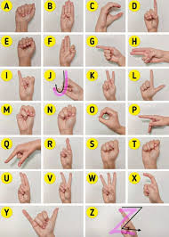

Klik 'Mulai Kamera' di bawah untuk mencoba.
Pastikan kamu memberikan izin akses kamera pada browser saat diminta.
Arahkan tanganmu ke kamera dengan jelas.
Mendeteksi Pola
?
Belum ada tangan
Kata Dirangkai
...
Prototipe Pendeteksi Pola Jari & Penerjemah Isyarat
Klik 'Mulai Kamera' di bawah untuk mencoba.
Pastikan kamu memberikan izin akses kamera pada browser saat diminta.
Arahkan tanganmu ke kamera dengan jelas.
Mendeteksi Pola
Belum ada tangan
...
Sistem kini mendeteksi 26 huruf (A-Z). Gunakan tangan kananmu. Perlu diingat: AI berbasis web 2D memiliki keterbatasan untuk membedakan huruf yang mirip/mengepal seperti M, N, T, S, E atau yang butuh gerakan seperti J dan Z. AI akan menebak kemungkinan terbaiknya.
